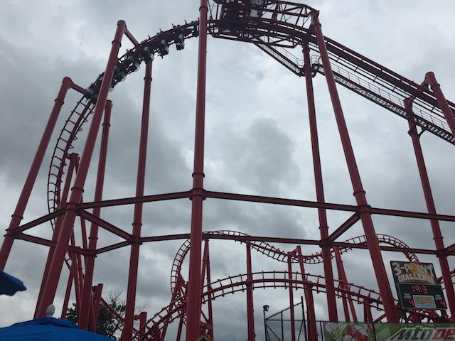
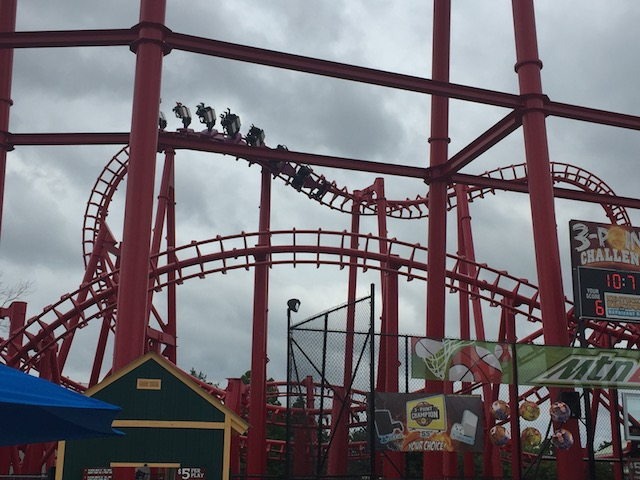
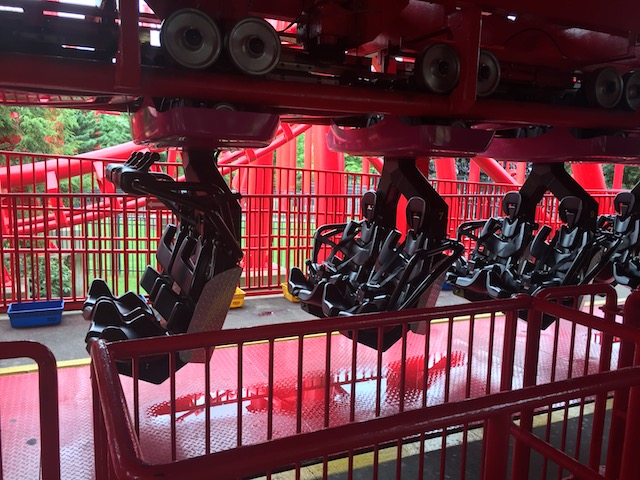

| |

T3 Review

For today's review, we're gonna have to travel back in time to 2018 when T3 was at Kentucky Kingdom. This was the parks Vekoma SLC. And....it was one of the few rides that survived the parks Six Flags days and resided at the new Kentucky Kingdom under new management long enough for me to ride. Second of all, it was one of the first Vekoma SLCs. So yeah. This had a lot of the earlier kinks that Vekoma had to fix in the later SLCs that are cloned everywhere. And we all know what kind of reputation those rides have. So.....yeah. This was a BRUTAL ride to say the least. We then climbed into the seat and put on the restraints. Yeah, a thing to note about this ride. The park got new trains for T3 when it reopened under new management for Kentucky Kingdom. The restraints on T3 weren't even like normal coaster restraints. They were more like what a fighter pilot wears. It was sort of a four point seatbelt. But trust me. It was good that this thing had these restraints. It was really f*cking good that these restraints were on the ride! Then you dispatched. Up the lift you went. Once you reached the top, it was all downhill from there. You curved away and down you went! However, from here on out, this ride...rattled. A LOT!!! It didn't really hurt, but it was SUPER ROUGH!!! And while not painful, it was certainly not pleasent. Once you reached the bottom of the first drop, it was all fast. You then soared up in the sea serpent roll, and it shaked the crap out of you going through it. And if it wasn't for those fighter pilot restraints, your head would be shaking around hitting back and forth against the OTSRs. So when the park switched restraints to make the ride less rough, the ride wasn't less rough as...we were getting the crap shaken out of us, but it was less painful. Which is certainly a good thing. Then after we flipped upsidedown a second time, you then headed back down and straight for the overbanked turn. While this turn wasn't painful per se, it just rattled. It felt like the train was going to fall apart. You then headed for the sidewinder. You got a JOLT here!!! You get some sort of laterals here, where your head is jerking, but there's no headbanging because of the restraints. Here, it was rough in the same way that a wooden coaster is rough. And that's just...bizzare. You then turned around, getting a decent view of the park, specifically Storm Chaser. Yeah, this view sucked. After that, you went straight for two inline twists. The Inline Twists were AWFUL!!!!! The train was rattling the whole time, except now, you were rattling and shaking as you were being flipped. It was almost like those carnival foot vibrators, only on your entire body. If it bitchslapped you while it vibrated. It was one of the few moments on any coaster where I actually grabbed the restraints in a moment of "OH SH*T!!!". F*CK!!! THIS WAS AWFUL!!! Then there wasn't much. You went through a small hill, around a turn, and down another slight hill, only to glide into the brake run. T3 was a REALLY sh*tty SLC. I can not think of any steel coaster that shakes, rattles, and vibrates as much as this ride did. And thank god this ride had the fighter pilot restraints, because I'm guessing that with the old restraints, this ride would've been Dragon or Gouderix bad. It honestly feels like this ride is made with chewing gum and rubber bands. I'm glad that this ride is gone. EASILY the worst SLC of all time and it's much better off being scrap metal. GOOD RIDDANCE T3!!!
1/10
Location: Kentucky Kingdom
Opened: 1995
Died: October 30, 2022
Built by: Vekoma
Last Ridden: June 27, 2018
I have ridden this exact same ride at the following parks.
Canada's Wonderland
Elitch Gardens
Geauga Lake
Heide Park
La Ronde
Michigan's Adventure
Movie Park Germany
Six Flags America
Six Flags Discovery Kingdom
Six Flags Mexico
Six Flags New England
T3 Photos



Home
|